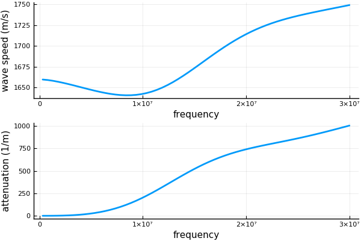

EffectiveWaves.jl Documentation
A Julia package for calculating, processing and plotting waves travelling in heterogeneous materials. The focus is on calculating the ensemble averaged waves, i.e. the statistical moments, of the waves. You can run Julia on JuliaBox in your browser without installation.
At present, the packages calculates effective wavenumbers, wave transimission and wave reflection from random particulate materials, see arXiv preprint for some details on the mathematics, or these notes for the formulas.
The package can deal with any volume fraction and frequency range.
First install Julia v1.0.0 or later, then run in the Julia REPL:
using Pkg
Pkg.add EffectiveWavesAlternatively, use the Julia package manager. From the Julia REPL, type ] to enter the Pkg REPL mode and then run
pkg> add EffectiveWavesQuick introduction
Here we calculate the effective wavenumbers for two species randomly (uniformly) distributed in Glycerol. We use only low volume fraction methods for simplicity.
using EffectiveWaves
#where: ρ = density, r = radius, c = wavespeed, and volfrac = volume fraction
const WaterDistilled= Medium(ρ=0.998*1000, c = 1496.0)
const Glycerol = Medium(ρ=1.26*1000, c = 1904.0)
species = [
Specie(ρ=WaterDistilled.ρ,r=30.e-6, c=WaterDistilled.c, volfrac=0.1),
Specie(ρ=Inf, r=100.0e-6, c=2.0, volfrac=0.2)
]
# background medium
background = GlycerolFor a list of other materials go to examples/materials.jl.
Calculate effective wavenumbers:
# angular frequencies
ωs = LinRange(0.01,1.0,60)*30.0e6
ks = wavenumber_low_volfrac(ωs, background, species)
speeds = ωs ./ real.(ks)
attenuations = imag.(ks)Plot the results
using Plots
pyplot(linewidth=2.0)
p1 = plot(ωs, speeds, lab = "", ylabel = "wave speed (m/s)", xlabel = "frequency");
p2 = plot(ωs, attenuations, lab = "", ylabel = "attenuation (1/m)", xlabel = "frequency");
plot(p1,p2, layout = (2,1))